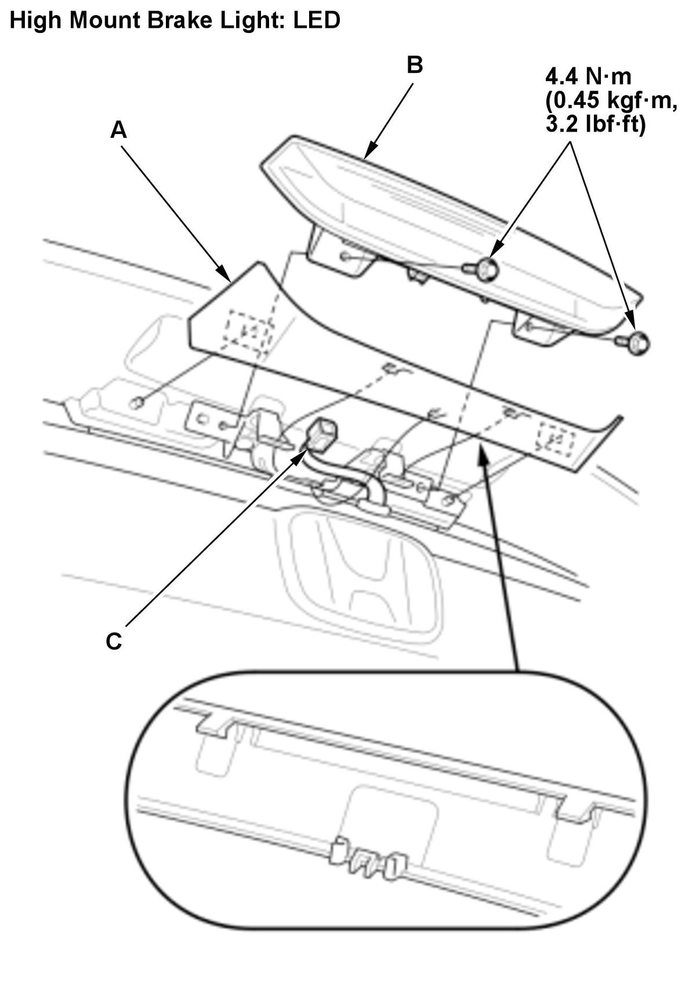

LEMON Manuals
: Even more car manuals for everyone: 1960-2025
Home
>>
Honda
>>
2016
>>
Civic LX, 4D Sedan, Automatic CVT Trans
>>
Repair and Diagnosis (Single Page)
>>
Accessories & Equipment
>>
Exterior Lights
>>
Exterior Lighting - Service Information
>>
Removal and Installation
>>
High Mount Brake Light Removal and Installation (5-door) (2017 2018 2019 2020 2021)
>>
Removal and Installation
Removal and Installation
High Mount Brake Light - Remove

Courtesy of HONDA, U.S.A., INC.
1. Remove the cover (A).
2. Remove the high mount brake light (B).
3. Disconnect the connector (C).
All Removed Parts - Install
1. Install the parts in the reverse order of removal.